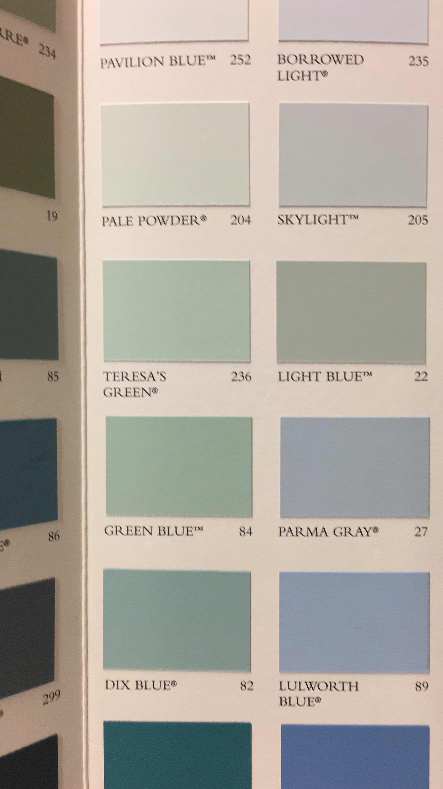

1/24/19, 2:32 PM
GLAD U LIKED
ALSO Have been still feeling rly good about the Jake thing
Still no caring
Also: chance’s my own thing
I think baby drive it down is such a good song for the two of our drives heheh
1/24/19, 6:30 PM
haha so I loved taking a bunch of random classes I found fun in college and now i’m realizing i have no actual marketable expertise?! bc i’ve never gotten deep enough into anything because I’m scared i’ll get bored of it wow haha!
I want to do research this summer but I literally cannot think of a single thing I would want to research
I was thinking maybe something about cenotaphs and the night sky idk
1/25/19, 6:53 AM

I miss your pets
1/25/19, 9:25 AM
open.spotify.commy favs on this:
DD Form 214 (JPEG), We gonna make it (Jadakiss), Sketch for a Summer (Durutti), Black effect (Carters), Resolve (alfa mist), Window (Noname), fell asleep with a vision (Spirit of something), haven’t finished listening tho
oh and my contribution to this scam
1/26/19, 12:47 PM
Lol I’m going out tonight what even
Yesterday, 6:56 AM

Yesterday, 3:45 PM
Hey is everything ok?? No need to respond if so- just want to check in and let you know that if you’re stressed I’m always here to talk :-)
Yesterday, 5:48 PM
♥i think pale powder and lulworth blue are my favorites, esp. in combination. have you heard chance’s song on the hamilton soundtrack? it’s a little different from his other recent work.
hesitated to ask about jake after you left U.S, because i was hoping the distance would be vvvv helpful (andmentioning him might duck it up)!! does it feel more permanent?
why cenotaphs?? i like the night sky idea—lots of continuity of that in your work
the cool thing about lacking experience but developing critical thinking/understanding multiple lenses is that gaining skills/experience CAN get done on the job, but having a liberal arts foundation doesnt happen anywhere other than school? so i think you made the most of your time as a student. here’s an article i read recently, that made me rethink a lot of my career insecurities: www.theatlantic.com
i’ve been OK i guess? my apologies for dropping off the face of the universe lol. there were lots of shopping period rejections (classes i thought i’d get, that i didn’t—sometimes my fault for not emailing over break, oftentimes just bad luck). i feel on top of my design jobs, but i think it made me really sensitive to moments where i’d come home (ready to introvert) and there were like 3+ people on our couch. so a weird mix of hypercontrol in class/work/applications, and less control with social stuff. definitely ended up cutting virtual communication down to compensate, but you’re my most not-exhausting friend (introvertz!! music! art!) so it didn’t help me to NOT talk to you
i think ____ will probably push our meet-up back, because we tentatively agreed on next weekend, but he mentioned a call-back, and now i think he’s putting off texting me about it. it doesn’t make me rethink the “see him in person, get more info, then decide if you’re getting your needs met” approach, but it definitely doesn’t make me feel better about the thing haha
class list OFFICIAL:
interactive design on the internet (yes)
the structure of networks (easy)
senior thesis (have a new idea)
typography (unexpectedly fun)
writing about music (amazing)